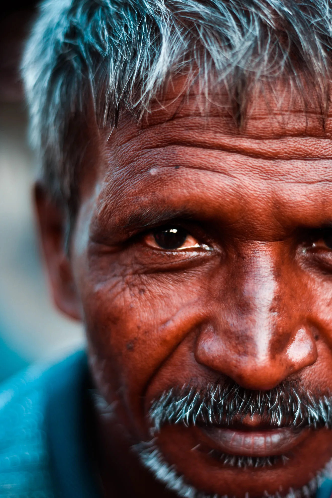
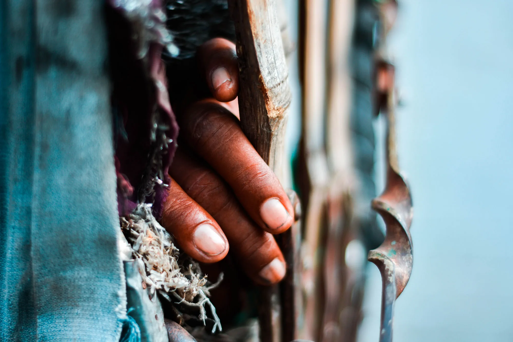
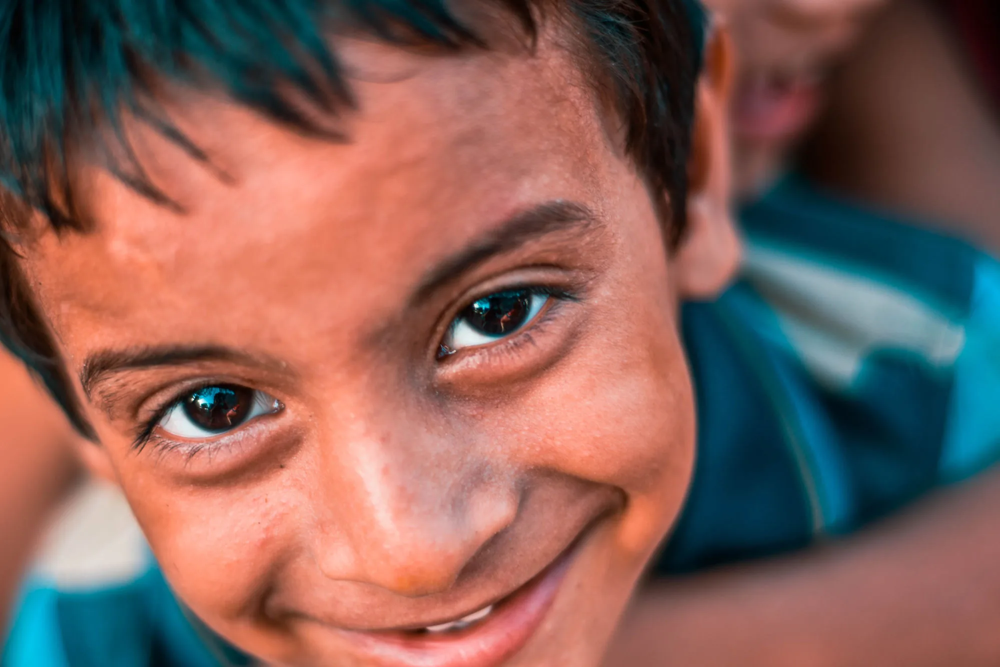

Nearly nine years ago, I picked up a camera with nothing more than curiosity. What began during my senior secondary school days as a hobby slowly turned into a passion that accompanied me through almost every phase of my life. Over the years, I experimented with portraits, wildlife, event photography, and countless other genres, and every one of them taught me something about photography. But if there is one genre that has shaped me—not just as a photographer, but as a human being—it is street photography. The streets never pose. They never wait for the perfect light or the perfect frame. They simply exist, and they demand that you slow down, observe, and truly see. Looking back today, I can confidently say that I have learned more from the streets of Patna than from any classroom I have ever sat in.
In my early years, my friends and I regularly organized what photographers call photowalks. Photography enthusiasts and seasoned professionals from across the city would gather at a predetermined location before setting out with a common theme for the day. Although we walked the same streets together, each of us searched for a different story — that was the beauty of street photography, every lens saw a different world. Among all those photowalks, two remain etched in my memory, not because I captured extraordinary photographs, but because they quietly changed the way I looked at life. My very first photowalk began at Anta Ghat, one of Patna's busiest vegetable markets, and was planned to end at Secretariat Ghat along the banks of the Ganga. Accompanying us were four or five professional photographers, each with nearly fifteen years of experience teaching young photographers like us.

Before we started, one of our mentors gave us a simple instruction: "If someone doesn't want to be photographed, don't force your camera upon them. Respect their choice." At that time, it sounded almost too obvious to deserve mentioning. I nodded and moved on, thinking it was merely basic etiquette. Little did I know that the streets would soon teach me that photography begins with respecting people long before pressing the shutter button.
As we entered the bustling market, cameras around me immediately turned toward vegetable vendors, colourful produce, busy customers, and the organised chaos that defined Anta Ghat. They were beautiful photographs, no doubt, but my eyes wandered elsewhere. Behind the rows of vendors, I noticed children playing beneath old trees. Nearby, a few rickshaw pullers had stretched themselves out for an afternoon nap after a hard morning's work. Their stories fascinated me far more than the merchandise surrounding them. That afternoon quietly reminded me that certainty itself is a privilege we often overlook. I knew where I would return at the end of the day. I knew I would have a meal waiting and a roof over my head. Many of the people I photographed probably couldn't make the same assumption about tomorrow. Yet none of them seemed defeated. The rickshaw pullers weren't simply sleeping — they were gathering enough strength to begin another shift before sunset. The children weren't worried about what they lacked. A worn-out tyre became their favourite toy, an empty patch of ground became their playground, and their laughter echoed louder than the noise of the market itself. Standing there with an expensive camera around my neck, I realised something that has stayed with me ever since: happiness rarely depends on how much we possess. More often, it depends on what we choose to create with whatever life has already placed in our hands.


As we continued walking, we crossed a Matka Yatra, a religious procession that reflected the deeply spiritual character of the city. It reminded me that every street in Patna carries more than traffic—it carries history, faith, traditions, and countless untold stories waiting to be noticed. Nearly two hours later, we reached Secretariat Ghat. Dark clouds had gathered over the Ganga, and before anyone could react, heavy rain began pouring down; within moments, all of us were drenched. Some people along the ghats remained where they were, resting beneath trees or on the stone steps, accepting the rain as just another part of their day. I never knew their stories, and perhaps I never would.
What caught my attention instead was our mentors. Rather than packing their cameras and waiting for the rain to stop, they gathered us around and began teaching us how to photograph in difficult light. They explained exposure, reflections, shutter speed, and how unpredictable weather often creates the most memorable images. Standing there in soaking clothes, I realised something profound: the rain hadn't changed. The moment hadn't changed. Only our response to it had. The same situation had become an inconvenience for some and an opportunity for others. That lesson would stay with me long after my clothes had dried.

The second experience that left an even deeper mark on me happened much closer to home. I live near Bazar Samiti, one of Patna's largest fruit markets. Years ago, National Geographic photographed its bustling lanes, capturing its vibrant colours and busy vendors, and naturally, most photographers—including many in our group—looked for similar compositions. But once again, I found myself looking beyond the obvious. I walked toward the slums bordering the market, where children played alongside stray dogs and daily wage labourers rested between work. There, I met an elderly man whose portrait now serves as the cover photograph for this blog.
As I approached him, he looked at my camera and asked in fluent English, "Will you show this photograph to the government? Will you tell them our story?" His English surprised me. Then he told me why: he had once been pursuing a Bachelor's degree in English, but while he was still studying, he lost his father. Soon after, he lost his elder brother too. Overnight, he became responsible for supporting his mother and younger sister. Survival took priority over education. He left college, took up daily wage labour, and never returned to complete the life he had once imagined. His story wasn't one of failure. It was one of sacrifice. Despite everything life had taken from him, one thing remained untouched—hope. Even in his seventies, living with very little, he spoke about tomorrow with quiet optimism, not because tomorrow had promised him anything, but because hope was something life had never managed to steal from him.
A little later, I met another labourer carrying an enormous load on his shoulders. What surprised me wasn't the weight. It was the smile. Unable to resist, I asked him why he looked so happy despite such physically demanding work. He laughed and replied with remarkable simplicity: "There's nothing to be sad about. My job is to work. The rest is in God's hands." Years have passed since that conversation, but I still remember those words whenever I find myself worrying about results I cannot control. As I continued walking, children ran around laughing with stray dogs, completely immersed in their own little world. There were no expensive toys, no carefully planned entertainment, no distractions—just pure joy created from whatever they had around them. Watching them made me question something I still ask myself today: how much of our anxiety comes not from our present, but from constantly trying to predict a future that none of us can possibly control?
Looking back now, I realise photography gave me far more than beautiful images. It reshaped the way I think, the way I observe, and the way I understand people. Of all the hobbies and passions I have pursued, none has transformed me as profoundly as photography. The streets of Patna became the greatest classroom I never enrolled in. They taught me lessons that sixteen years of formal education never could — that certainty is a blessing we rarely notice, that happiness isn't measured by possessions, that hope can survive unimaginable hardships, and that the wisest philosophies are often spoken not from podiums or textbooks, but by ordinary people living extraordinary lives.
Life will always remain uncertain. It has a habit of changing our plans without asking for permission. We should absolutely work hard for the future and strive to build a better tomorrow, but worrying endlessly about outcomes serves little purpose, because life has a way of surprising us when we least expect it. What truly matters is how we respond when those surprises arrive, how gracefully we adapt, and whether we remain content knowing we gave our best. Today, when I revisit those old photographs, I no longer admire them for their composition or camera settings — I remember the conversations behind them: the smiles, the sacrifices, the resilience, and the hope. Because somewhere between the crowded markets, the quiet ghats, the narrow lanes, and the people I was fortunate enough to meet, I wasn't just photographing the streets of Patna. The streets of Patna were quietly shaping me into the person I am today.